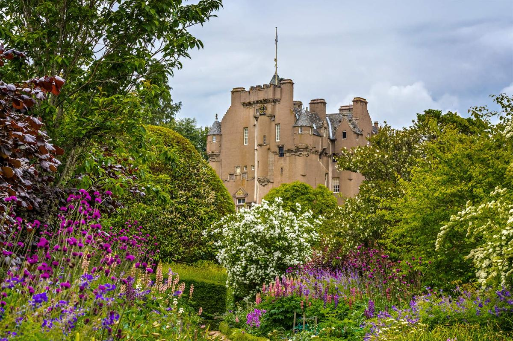
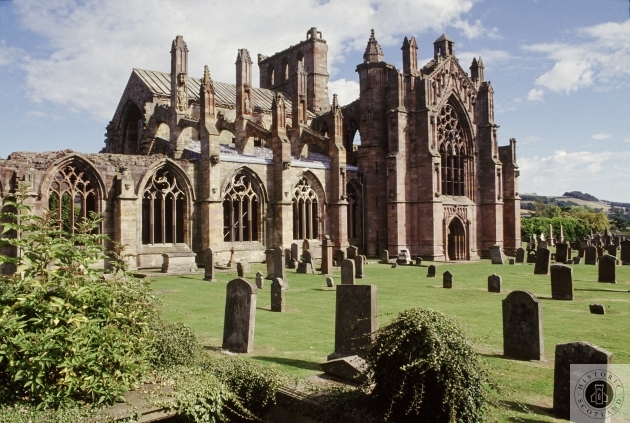
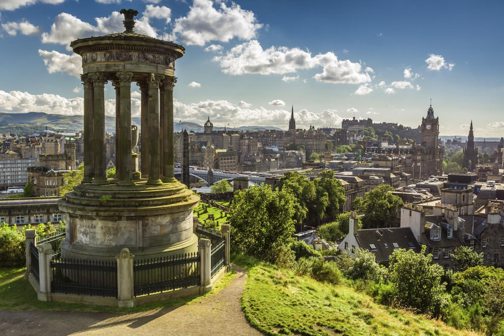

The first adventure on my list is a magical driving tour route that spans a total three hundred eleven miles!

This Scottish castle trail contains nineteen different castles ranging from the beautiful Dunnottar Castle sitting on a hill next to the water to the fairytale like Craigievar Castle, decorated with turrets and gargoyles.
The next adventure on my itinerary for Scotland is a visit to one of their more historical sites.

The Border Abbeys of Scotland were once home to the monks between the 12th and 16th centuries. They now connect via a long-distance footpath with four different ancient buildings along the way. Of course, since the trail spans a whopping 68 miles, it will be a multiple day hike.
The final destination on my list of the greats of Scotland is arguably its most historically rich, most beautiful, and most popular city: Edinburgh

Not only is this place the most beautiful city in Scotland, it also has the most famous castle in Scotland: Ediburgh castle. Old Town, Edinburgh's oldest district still has many Reformation-era buildings. Along with those the district has a vault that lies beneath, you can take a tour to explore it.